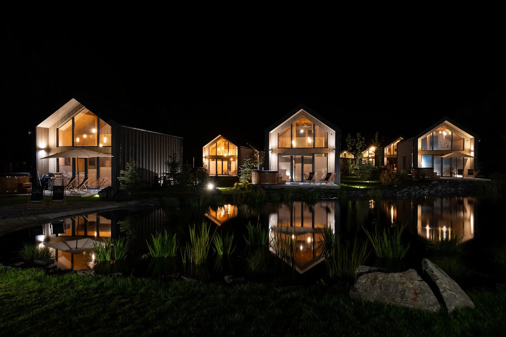
Dziesięć drewnianych domków w kameralnej osadzie pod Radkowem. Balia z hydromasażem przed każdym domkiem, dwie sauny w ogrodzie, kominek i cisza, której nie słychać w mieście.
Nowoczesne, piętrowe domki z antresolą. Salon z w pełni wyposażonym aneksem kuchennym, dwie sypialnie i dwie łazienki - tyle miejsca, żeby przyjechać z dziećmi albo w dwie pary i nikomu nie wchodzić w drogę.
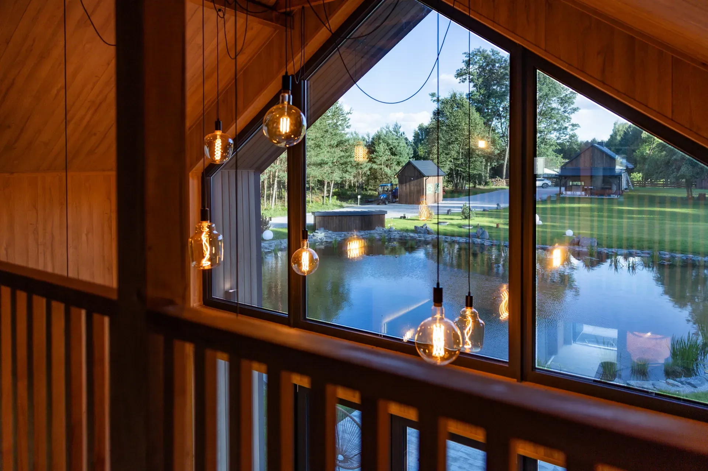
Wszystko w granicach osady - bez wsiadania do samochodu.
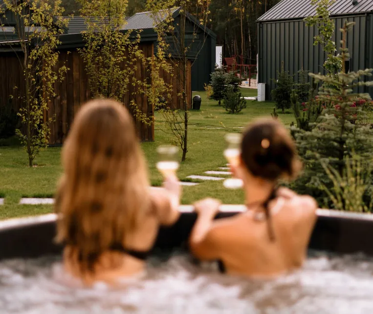
Gorąca woda pod gołym niebem o każdej porze roku - najlepiej po zmroku, kiedy nad lasem widać gwiazdy.
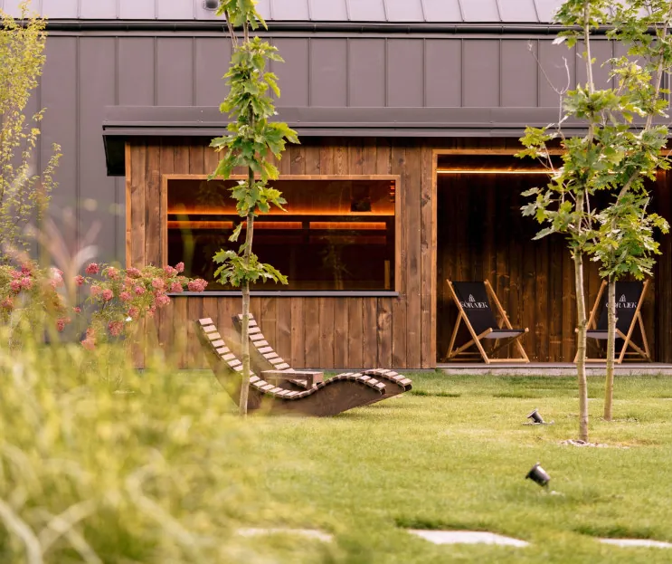
Dwie zewnętrzne sauny pomiędzy domkami, a obok leżaki i strefa relaksu w cieniu drzew.
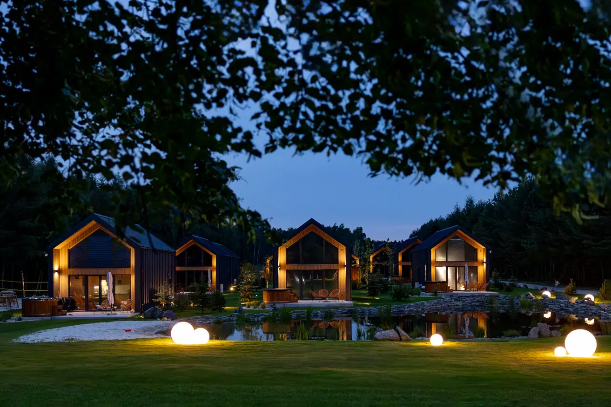
Wydzielone miejsce na ognisko i duży drewniany plac zabaw dla najmłodszych gości.
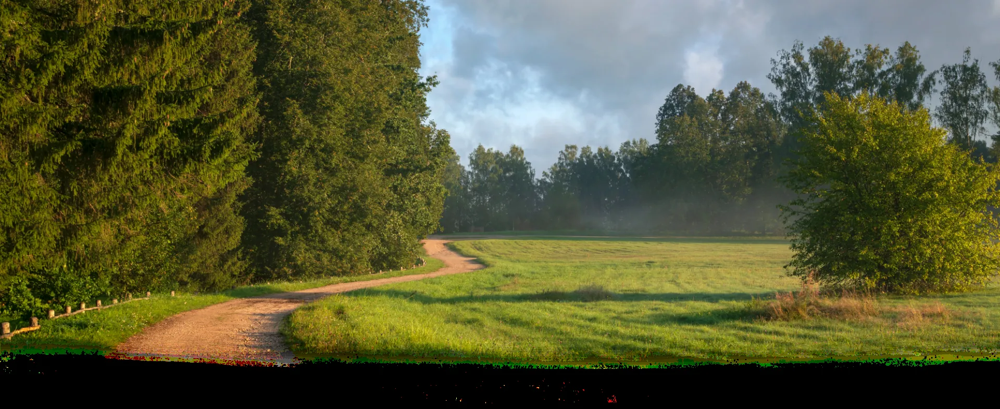
Duża, rustykalna stodoła na terenie osady - miejsce na integrację firmową, warsztaty, biesiadę albo kameralną uroczystość. Obok miejsce na ognisko, a goście nocują kilkadziesiąt metrów dalej, we własnych domkach.
Sala plus dziesięć domków w jednym miejscu, bez rozwożenia ludzi po noclegach.
Przestrzeń z charakterem, las za oknem i cisza, w której da się pracować.
Biesiada w stodole, ognisko obok, a rano śniadanie we własnym domku.
Świętokrzyskie w promieniu godziny jazdy - zamki, jaskinia, skansen i wąskotorówka.
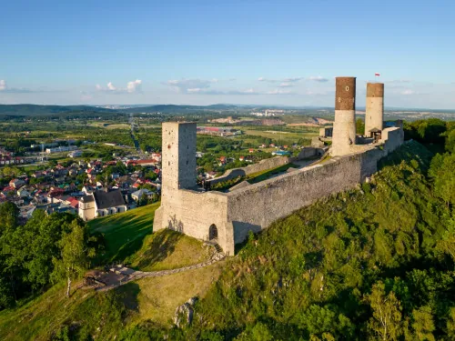
Średniowieczna warownia z przełomu XIII i XIV wieku, z wieżami widokowymi nad miasteczkiem.
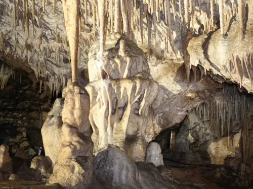
Jedna z najpiękniejszych jaskiń krasowych w Polsce, zwiedzanie z przewodnikiem.
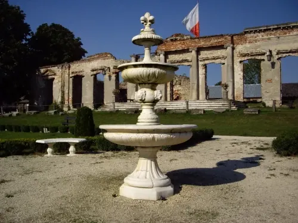
Późnogotycka fortalicja z XVI wieku nad Nidą, z jazdą konną i pokazami rycerskimi.
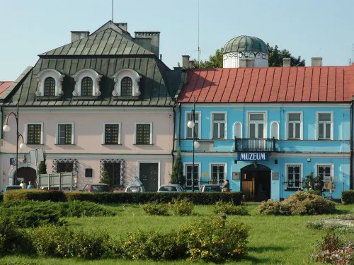
Trzecia co do wielkości na świecie kolekcja zegarów słonecznych i przyrządów astronomicznych.
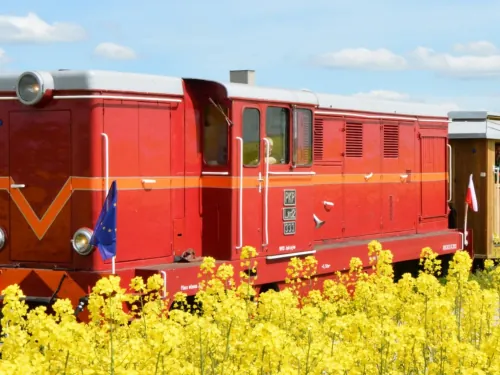
Kolejka wąskotorowa przez rozlewiska Nidy i lessowe wzgórza Ponidzia.
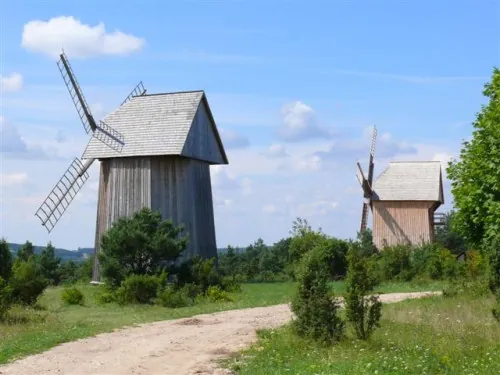
Skansen z wiatrakami i drewnianą zabudową dawnej wsi świętokrzyskiej.
Zdjęcia z osady - w wersji finalnej z pełnym zestawem i powiększaniem na telefonie.
W wersji finalnej w tym miejscu pojawiają się prawdziwe opinie z wizytówki Google, odświeżane automatycznie. Poniżej przykładowy układ.
Tu pojawi się opinia z Google wraz z imieniem autora i datą wystawienia.
Tu pojawi się opinia z Google wraz z imieniem autora i datą wystawienia.
Tu pojawi się opinia z Google wraz z imieniem autora i datą wystawienia.
Rezerwacja online przez system dostępny na stronie albo telefonicznie w recepcji. W wersji finalnej przycisk prowadzi prosto do kalendarza dostępności.